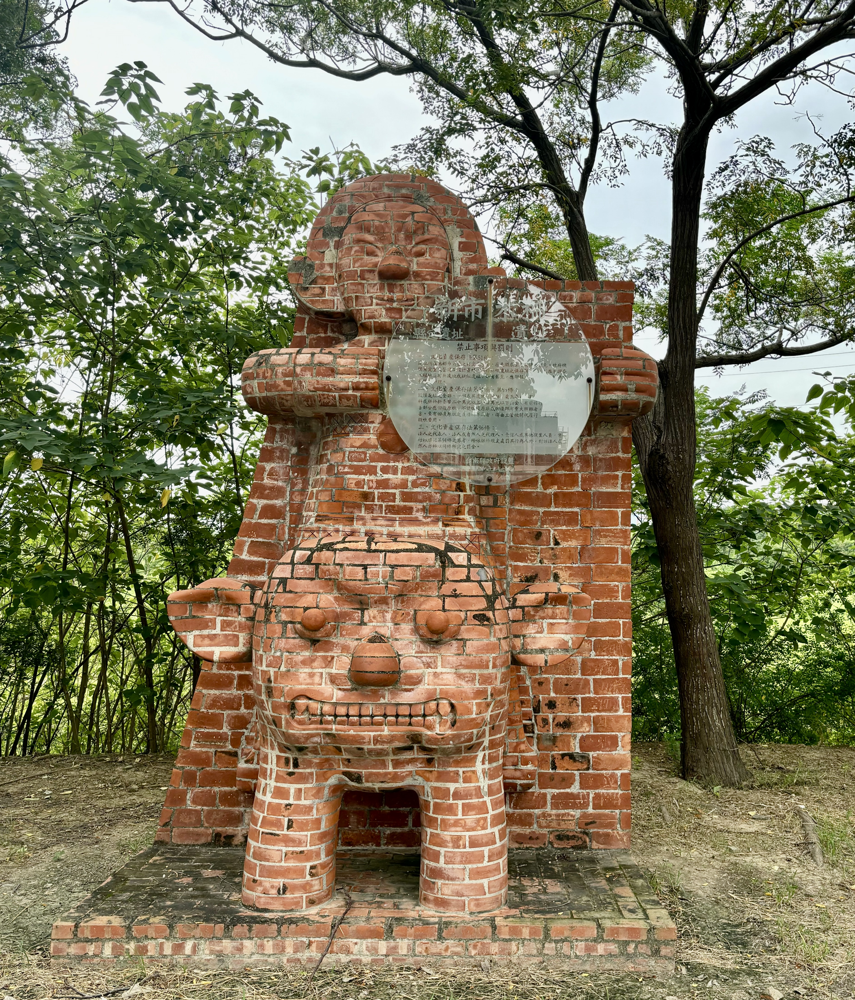

Research

Ceramic studies in Southeast Asia
European exceptionists argue their unique culture was the key to The Industrial Revolution. However, historian Kenneth Pomeranz indicates there may be more similarities than presumed in economy between Europe and East Asia. By examining the organization of sugar production, and the consumer culture in Taiwan, my dissertation aims to integrate the theory The Great Divergence with the study of material culture. Parts of my dissertation is presented in the WAC-10 . /p>

Ceramic studies in Southeast Asia
As a member of the UCLA Southeast Asia Archaeology lab, I have been participating in the field projects in the Philippines since 2022. I am actively helping local scholars determine the age and source of the trade ceramics. So far, we have discovered that the space of one early church in Naga City may have been an area that joined maritime exchange networks since the 7th Century. We also have more field projects in the “Binanuahan”, which means settlements in Filipino in the future years.

Biodiversity of fish in Taiwan
How do ancient and modern fishery practices impact maritime biodiversity? Our research in Tainan Science Park indicates that the decrease of fish remains in Southern Taiwan archaeological sites was not a result of overfishing but geomorphological changes in the ancient time, against previous uncritical assumptions. Modern fisheries, however, accelerate fish growth and narrow their life spans. This discovery was published on Estuarine, Coastal and Shelf Science . Our finding is reported by The Liberty Times.